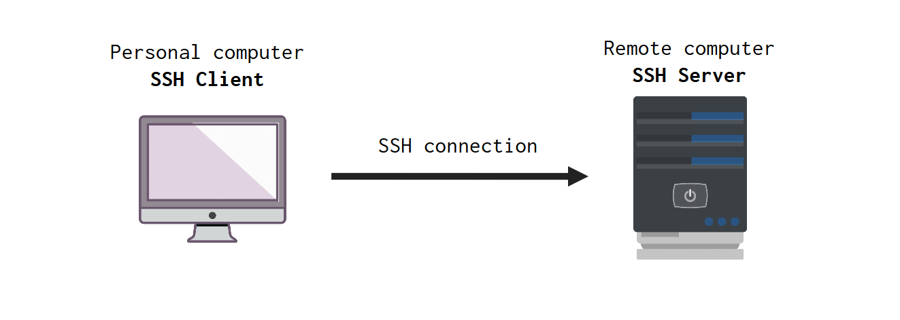
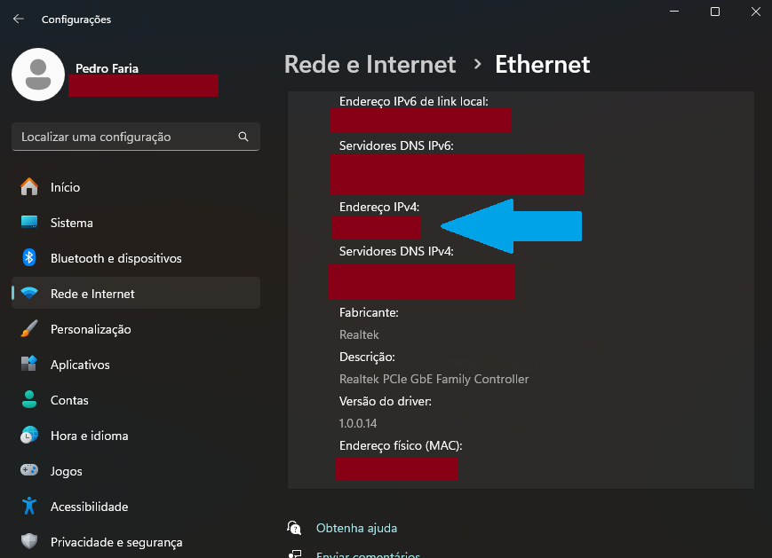

Introduction
SSH stands for Secure Socket Shell, and it is probably the most used protocol today to establish a secure connection between two computers.
In this article, I want to explain how can access a remote computer through a SSH connection.
SSH Client vs SSH Server
Two computers are involved when you are trying to perform a SSH connection. One computer is your personal desktop/laptop, this is the computer you are using to perform the connection. This computer, is commonly reffered to as the SSH Client.
The other computer, is the remote machine, and it is commonly reffered as the SSH Server. This SSH Server is the computer that you are trying to connect to, while the machine you are using to perform the connection, is the SSH Client.

On this experiment that I’m sharing here, I used my Ubuntu (Linux) machine as the SSH Server, because most servers these days uses Linux distributions as their operational systems, such as Ubuntu, Debian and Alpine.
In the other hand, my SSH Client here in this example is my Windows machine, or, to be more specific, I’m using my WSL (Windows Subsystem for Linux) with Ubuntu to perform the connection.
So essentially, in this experiment, both sides of this relationship (the SSH Server and the SSH Client) are using Ubuntu distros as they operational system.
Requirements
What you must have to login into a remote computer using SSH? Well… you need the following things to establish a SSH connection between two computers:
- Both computers (SSH Client and Server) must be on and connected to the internet.
- The SSH Client needs to have “OpenSSH” installed.
- The SSH Server needs to have “OpenSSH Server” installed (which is also commonly reffered as the
sshdprogram1). - In order to connect into the SSH Server, this Server needs to have the
sshdprogram working and running, so that it waits for incoming connections. - You need to know the IP address (search specifically, for the public IPv4 address) of the SSH Server.
- You need to know which username you want to use when you login into the SSH Server, and also, which is the password of this username.
One thing is optional:
- If you want to establish a password-less connection, then, you need to generate a SSH Key Pair, by using the
ssh-keygencommand 2.
Find the IP Address of your Server
The IP address of the remote computer (i.e. the SSH Server) you are trying to connect to is a crucial information, because SSH will use this information to find the actual computer. Without this information, SSH cannot locate where this computer is.
IPv4 vs IPv6
There are two styles (or models) of IP addresses, IPv4 and IPv6. The IPv4 model is the one that you are looking for! So search for an IP address that have the IPv4 format, which are 4 numbers separated by dots. Examples: 127.0.0.1 (also known as the IP address for localhost) and 172.16.254.1.
Private vs public IP address
There is also the distinction between private and public IP addresses that you need to be aware of. Some IP addresses are private in the meaning that they can only be acessed from a very specific location, which is your local network. That is, private IP addresses are visible only within the same WiFi/Ethernet you are connected in.
In other words, if you are like in Italy for example, and you are trying to access a server that is in France, using the private IP address of that server, then, you will never succeed, it is impossible. Because a private IP address is only accesible if you were connected to the same WiFi/Ethernet that the server is. So you would need to be in the same phisical location of the server in France, and connected to the same network (WiFi/Ethernet) as the server to access it using it’s private IP address.
All of this means that, if you are trying to connect to a remote computer that is far away from you, then you certainly need the public IP address of this computer, not the private one. So you should always look for the public IP address of the computer you are trying to login in.
Where to find it?
If, and only if, your SSH Server is actually a Windows machine (which is not commom for servers in general), then, you could open the Windows Settings Menu, and look for the section Network & internet, and look for the “Properties” window of the WiFi/Ethernet that your server is connected to.
In the print below, I used my Windows machine as an example, and I covered the sensible information with a red rectangle. But the IPv4 address can be found where I am pointing with the blue arrow (sorry, my Windows machine is in Portuguese):

But in contrast, if your server is a Linux machine, then, you can open a terminal, and run the command ifconfig, then look for the IPv4 address that will appear after the inet word.
ifconfigThe IP address of my Ubuntu SSH Server
I cannot share the public IP address of Ubuntu machine, because if I did, then, I could suffer from remote attacks. If people know where my machine is, then, they can try to access it and break it.
That is why, in this article, I’m going to use a fictituous IP address over the next examples. Let’s suppose I looked for the IPv4 of my Ubuntu computer, which is the SSH Server in this experiment, and I found the IP 171.0.0.1. So every time you see this IP 171.0.0.1, you know that this is the IP of my SSH Server.
Find the users available in your server
Now, we need to know which username we want to use in the server’s login. If your SSH Server is a Linux machine, then, you can probably use the root username, which is the admin of the machine, it is the user with most privileges on the server. But using the root user is usually a bad practice.
So I will choose to use the pedro user instead, which is my personal user, to login into my server. Now, if your SSH Server is a Linux machine, and you are unsure about which user to use, you can look at the available users in your server, so that you get a list of “available options”.
To get this list of available users, run the following bash command in the terminal of your SSH Server:
cut -d: -f1 /etc/passwdSimply choose whatever user you want from this list.
Check if the SSH Server is running!
The machine that is behaving as the SSH Server in this relationship, not only needs to be up and running, and connected to the internet. This machine also needs to have the sshd (SSH Server daemon process) program up and running as well.
The sshd program, is the actual SSH Server process. In other words, that is the actual program that makes a computer behave as a SSH Server. This program will allocate (or take control over) a web socket in your computer, and will use this socket to wait and listen for incoming SSH connections, and it will handle/accept these connections as they come.
Usually, SSH is a core functionality of any web server in the world. As a consequence, usually, the sshd program is already started right at the startup of the machine. So usually, you do not have the need to manually start the sshd program, it automatically starts for you.
But you know… problems or bugs can happen, or maybe, you lack some specific configurations in your server. So how can you check if the sshd program is up and running in your server? If this server is a Linux machine, you can simply run the following bash command to check the current state of the sshd program:
systemctl status sshdNow, if for some reason, the above command shows that the sshd program is not in “active/running” state, you can manually start the sshd program by running the following command:
sudo systemctl start sshdMaking the SSH connection
Now that we have all the information available, and we are sure that the SSH Server is up and running, we can effectively make the connection with SSH.
Everything you need to do now, is to run the ssh command in the terminal of your SSH Client, which the username you want to use in the login, followed by a @ and the IP Address of the SSH Server. So the command have the format of ssh {user}@{ip_address}.
ssh pedro@171.0.0.1After you run the above command, you probably will be prompted with some questions, just answer “yes”, or whatever answer is most appropriate. After these questions, the SSH Server will ask you to provide the password of the user you choose. In the above example, I used the pedro user to login into the server, so I need to type the password of this user.
If you provide the correct password, the login will succeed and SSH connection to the server will be complete! After that, the server will provide a new bash terminal for you. Through this terminal, you have a lot of control over the server, and you can send whatever bash command you want to be executed into the server.
The output will probably look something like this. If you see the “Last login: …” message, then, your SSH connection was succesful and you currently are inside the bash terminal of the SSH Server. Now, you can send whatever bash command you want to be executed by the server.
Last login: Wed Jan 24 20:27:17 2024
pedro@pedro:~/$Using password-less mode in the SSH connection
Every time you connect to the server, you will need to provide the password of the user you are using to login. However, SSH offers a mode that does need a password, which is known as the “password-less mode of SSH”, and in fact, it is the recommended way of connecting to a server.
In other words, using the “password-less mode of SSH” is the most secure way of building a SSH connection, and because of that, it is how you should connect to your server. This mode uses a key pair to autenthicate the user into the server. This key pair is composed by a public key and a private key, and when you use this mode in SSH, all of the communications made in the SSH connection (between the server and the client) are encrypted by using this pair of keys.
This means that, in order to use this mode of SSH, you need first to generate a key pair, if you don’t have one already. You can generate this pair by running the ssh-keygen command in the terminal of your SSH Client.
ssh-keygenIn theory, you can run this ssh-keygen command in whatever computer you want. You do not need to generate this key pair in the SSH Client necessarily. This computer does not even need to be involved in the SSH relationship here. You can generate this key pair in any place you can.
However! What really essential here, is that the SSH Client needs to have both the public and the private key, stored inside of him. In contrast, the SSH Server needs to have only the public key.
This is a very important/essential detail!
As a result, is much easier if you run the ssh-keygen command inside the SSH Client. Because then, you need to do nothing, since both keys were generated inside the SSH Client, and as a consequence, they are already stored inside the SSH Client. All you have to do is to send the public key that was generated to the SSH Server.
But if you generated this key pair in a different computer, like the notebook of your friend, then, you need to add both the public and private keys to the computer that you are using as the SSH Client in this relationship.
However, is important to emphasize, you should avoid at all costs moving the private key around! In other words, the private key is an extremely sensitive information, and you should not send it to anyone. If anyone with bad intentions have access to this private key, he may try to get access to your server and make some very serious damage.
That is why we usually generate this key pair inside the SSH Client. Because then we avoid the need to send/move this private key to somewhere else.
Having that said, there is no problem to exchange the public key with other people. The public key of this key pair, is really public in the sense that there is no danger if someone else discover this key. In fact, you need to exchange this public key with the other side of the relationship. The SSH Server in this relationship needs to know which is your public key.
One popular way of sending the public key to the SSH Server, is to use the ssh-copy-id command. You execute this command in the SSH Client. You provide the path to the public key you generated after the -i option, and after that, you provide the same information (username and IP address) you start the connection with the server before:
ssh-copy-id -i ~/.ssh/id_rsa.pub pedro@171.0.0.1You probably will need to provide the password of your username one more time in this command. But if this command runs succesfully, then, over the next times you login into the server, you will not need a password anymore. Because the server will authenticate you automatically based on your key pair.